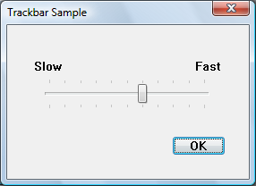
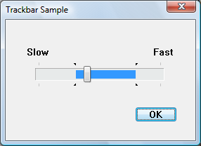

A trackbar is a window that contains a slider (sometimes called a thumb) in a channel, and optional tick marks. When the user moves the slider, using either the mouse or the direction keys, the trackbar sends notification messages to indicate the change.
Trackbars are useful when you want the user to select a discrete unsigned integer value or a set of consecutive unsigned integer values in a range. For example, you might use a trackbar to allow the user to set the repeat rate of the keyboard by moving the slider to a given tick mark. The following illustration shows a typical trackbar.

The slider in a trackbar moves in increments that you specify when you create it. The values in this range are referred to as logical units. For example, if you specify that the trackbar should have logical units that range from 0 to 5, the slider can occupy only six positions: a position at the left side of the trackbar and one position for each increment in the range. Typically, each of these positions is identified by a tick mark; however, the number of tick marks is arbitrary and can be fewer than the number of logical positions.
You create a trackbar by using the CreateWindowEx function, specifying the TRACKBAR_CLASS window class. After you have created a trackbar, you can use trackbar messages to set and retrieve many of its properties. Changes that you can make include setting the minimum and maximum positions for the slider, drawing tick marks, setting a selection range, and repositioning the slider.
If you create a trackbar with the TBS_ENABLESELRANGE style, you can specify a selection range. The trackbar highlights the selection range and displays triangular tick marks at the start and end, as shown in the following illustration.

The trackbar's selection range does not affect its functionality in any way. It is up to the application to implement the range. You might do this in one of the following ways:
The logical units of a trackbar are the set of contiguous values that the trackbar can represent. They are usually defined by specifying the range of possible values with a TBM_SETRANGE message as soon as the trackbar has been created. Applications can dynamically alter the range by using TBM_SETRANGE, TBM_SETRANGEMAX, or TBM_SETRANGEMIN.
To retrieve the position of the slider (that is, the value the user has chosen), use the TBM_GETPOS message. To set the position of the slider, use the TBM_SETPOS message.
A trackbar automatically displays tick marks at its beginning and end, unless you specify the TBS_NOTICKS style. (In the Microsoft Visual Studio resource editor, this means setting the Tick Marks property to False.) You can use the TBS_AUTOTICKS style to automatically display additional tick marks at regular intervals along the trackbar. By default, a TBS_AUTOTICKS trackbar displays a tick mark at each increment of the trackbar's range. To specify a different interval for the automatic tick marks, send the TBM_SETTICFREQ message to the trackbar. For example, you could use this message to display only 10 tick marks in a range of 1 through 100.
To set the position of a single tick mark, send the TBM_SETTIC message. A trackbar maintains an array of DWORD values that stores the position of each tick mark. The array does not include the first and last tick marks, which the trackbar creates automatically. You can specify an index in this array when you send the TBM_GETTIC message to retrieve the position of the corresponding tick mark. Alternatively, you can send the TBM_GETPTICS message to retrieve a pointer to the array. The number of elements in the array is equal to two less than the tick count returned by the TBM_GETNUMTICS message. This is because the count returned by TBM_GETNUMTICS includes the first and last tick marks, which are not included in the array. To retrieve the physical position of a tick mark, in client coordinates of the trackbar's window, send the TBM_GETTICPOS message. The TBM_CLEARTICS message removes all but the first and last of a trackbar's tick marks.
A trackbar's line size determines how far the slider moves in response to keyboard input from the arrow keys, such as the RIGHT ARROW or DOWN ARROW key. To retrieve or set the line size, send the TBM_GETLINESIZE and TBM_SETLINESIZE messages. The trackbar also sends the TB_LINEUP and TB_LINEDOWN notification codes to its parent window when the user presses the arrow keys.
A trackbar's page size determines how far the slider moves in response to keyboard input, such as the PAGE UP or PAGE DOWN key, or mouse input, such as clicks in the trackbar channel. To retrieve or set the page size, send the TBM_GETPAGESIZE and TBM_SETPAGESIZE messages. The trackbar also sends the TB_PAGEUP and TB_PAGEDOWN notification codes to its parent window when it receives keyboard or mouse input that scrolls the page. For more information, see Trackbar Notification Messages.
An application can send messages to retrieve the dimensions of a trackbar. The TBM_GETTHUMBRECT message retrieves the bounding rectangle for the slider. The TBM_GETTHUMBLENGTH message retrieves the length of the slider. The TBM_GETCHANNELRECT message retrieves the bounding rectangle for the trackbar's channel, which is the area over which the slider moves. It contains the highlight when a range is selected. If a trackbar has the TBS_FIXEDLENGTH style, you can send the TBM_SETTHUMBLENGTH message to change the length of the slider.
You retrieve or set the selection range by sending messages to the trackbar. Use the TBM_SETSEL message to set the starting and ending positions of a selection. To set just the starting position or just the ending position of a selection, send a TBM_SETSELSTART or TBM_SETSELEND message. To retrieve the starting or ending positions of a selection range, send a TBM_GETSELSTART or TBM_GETSELEND message. To clear a selection range and restore the trackbar to its original range, send the TBM_CLEARSEL message.
[!Note]
It is the application's responsibility to ensure that the user cannot select values outside the selection range. The control itself does not prevent the user from moving the slider outside the range.
Â
A trackbar notifies its parent window of user actions by sending the parent a WM_HSCROLL or WM_VSCROLL message. A trackbar with the TBS_HORZ style sends WM_HSCROLL messages. A trackbar with the TBS_VERT style sends WM_VSCROLL messages. The low-order word of the wParam parameter of WM_HSCROLL or WM_VSCROLL contains the notification code. For the TB_THUMBPOSITION and TB_THUMBTRACK notification codes, the high-order word of the wParam parameter specifies the position of the slider. For all other notification codes, the high-order word is zero; send the TBM_GETPOS message to determine the slider position. The lParam parameter is the handle to the trackbar.
The system sends the TB_BOTTOM, TB_LINEDOWN, TB_LINEUP, and TB_TOP notification codes only when the user interacts with a trackbar by using the keyboard. The TB_THUMBPOSITION and TB_THUMBTRACK notification codes are only sent when the user is using the mouse. The TB_ENDTRACK, TB_PAGEDOWN, and TB_PAGEUP notification codes are sent in both cases. The following table lists the trackbar notification codes and the events (virtual key codes or mouse events) that cause the Virtual-Key Codesnotifications to be sent.
| Notification code | Reason sent |
|---|---|
| TB_BOTTOM | VK_END |
| TB_ENDTRACK | WM_KEYUP (the user released a key that sent a relevant virtual key code) |
| TB_LINEDOWN | VK_RIGHT or VK_DOWN |
| TB_LINEUP | VK_LEFT or VK_UP |
| TB_PAGEDOWN | VK_NEXT (the user clicked the channel below or to the right of the slider) |
| TB_PAGEUP | VK_PRIOR (the user clicked the channel above or to the left of the slider) |
| TB_THUMBPOSITION | WM_LBUTTONUP following a TB_THUMBTRACK notification code |
| TB_THUMBTRACK | Slider movement (the user dragged the slider) |
| TB_TOP | VK_HOME |
Â
This section describes the window message processing performed by a trackbar.
| Message | Processing performed |
|---|---|
| WM_CAPTURECHANGED | Kills the timer if one was set during WM_LBUTTONDOWN processing and sends the TB_THUMBPOSITION notification code, if necessary. It always sends the TB_ENDTRACK notification code. |
| WM_CREATE | Performs additional initialization, such as setting the line size, page size, and tick mark frequency to default values. |
| WM_DESTROY | Frees resources. |
| WM_ENABLE | Repaints the trackbar window. |
| WM_ERASEBKGND | Erases the window background, using the current background color for the trackbar. |
| WM_GETDLGCODE | Returns the DLGC_WANTARROWS value. |
| WM_KEYDOWN | Processes the direction keys and sends the TB_TOP, TB_BOTTOM, TB_PAGEUP, TB_PAGEDOWN, TB_LINEUP, and TB_LINEDOWN notification codes, as appropriate. |
| WM_KEYUP | Sends the TB_ENDTRACK notification code if the key was one of the direction keys. |
| WM_KILLFOCUS | Repaints the trackbar window. |
| WM_LBUTTONDOWN | Sets the focus and the mouse capture to the trackbar. When necessary, it sets a timer that determines how quickly the slider moves toward the mouse cursor when the user holds down the mouse button in the window. |
| WM_LBUTTONUP | Releases the mouse capture and terminates the timer if one was set during WM_LBUTTONDOWN processing. It sends the TB_THUMBPOSITION notification code, if necessary. It always sends the TB_ENDTRACK notification code. |
| WM_MOUSEMOVE | Moves the slider and sends the TB_THUMBTRACK notification code when tracking the mouse (see WM_TIMER). |
| WM_PAINT | Paints the trackbar. If the wParam parameter is non-NULL, the control assumes that the value is an HDC and paints using that device context. |
| WM_SETFOCUS | Repaints the trackbar window. |
| WM_SIZE | Sets the dimensions of the trackbar, removing the slider if there is not enough room to display it. |
| WM_TIMER | Retrieves the mouse position and updates the position of the slider. (It is received only when the user is dragging the slider.) |
| WM_WININICHANGE | Initializes slider dimensions. |
Â
A trackbar that is created with the TBS_TOOLTIPS style has a default tooltip control. The tooltip remains visible and displays the current value as the user drags the slider using the mouse.
You can assign a new tooltip control to a trackbar by sending the TBM_SETTOOLTIPS message. To retrieve the handle to an assigned tooltip control, use the TBM_GETTOOLTIPS message.
Â
Â